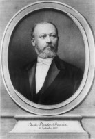

Charles Henri Joseph DROULERS — Né le 1838 — Décédé le 16/09/1899 à Douai
Charles Henri Joseph DROULERS
Né le 1838
Décédé le 16/09/1899 à Douai
Résumé
Charles Henri Droulers est l'héritier de deux grandes lignées fondatrices du textile nordiste. Par son père Louis Droulers, il descend de Pierre Joseph Droulers de Wattrelos, dont les fils ont développé les premières activités industrielles de la famille. Par son mariage avec Joséphine Prouvost, fille d'Amédée Prouvost fondateur du célèbre Peignage, il unit les dynasties Droulers et Prouvost. La famille Droulers est directement liée aux origines de la maison Agache : c'est Florentin Droulers qui s'associe à Donat Agache pour racheter en 1849 la filature de Pérenchies en faillite, fondant ainsi la société Droulers et Agache qui deviendra les Établissements Agache, la plus grande entreprise française de filature de lin. Charles Henri est également l'un des associés qui participent en 1859 à l'acquisition de la filature d'Auchy-lès-Hesdin aux côtés de Louis Wattinne, avant de se retirer de l'affaire en 1860. Sa fille Madeleine Droulers épouse Eugène Wattinne, réunissant ainsi les branches Droulers et Wattinne-Bossut. Son président du tribunal de commerce de Roubaix, son père Charles-Henri Droulers, avait reçu une citation lors de la visite de Napoléon III à Pérenchies pour l'excellence de ses filatures.
Sources :
- thierryprouvost.com/Droulers-Prouvost.html
- FranceArchives (Filauchy)
- Wikipédia Agache
Charles Droulers acheta le Château de Biez à Pecq (Belgique) et construisit la partie gauche, la seule qui subsiste avec la tour
Source : Agnès Wattinne
{kind=link}

{kind=link}
📷 Cliquez pour voir 2 photo(s)